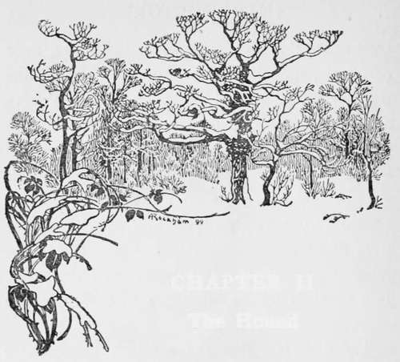

Introductory. Part 3
Description
This section is from the book "Hunting: A Manual of Fox, Hare, Stag & Otter Hunting", by J. Otho Paget. Also available from Amazon: Hunting: A Manual of Fox, Hare, Stag & Otter Hunting.
Introductory. Part 3
It is never safe to predict anything that refers to hunting, and it is always the unexpected that comes to pass. Those who are connected with the hounds have a special interest which the ordinary follower lacks, and the latter sometimes feels the proceedings to be tame ; but the master or huntsman, however bad the scent, has the pleasure of watching the working of individual hounds. In countries which are called fashionable it would be impossible for a large field to ride near enough the pack to watch what each hound was doing, and therefore it can be easily understood that slow hunts are not very popular. I have often heard it said by those who affect a knowledge of the sport, that only about a third of those who go out hunting care for anything except the riding. This may be true in a measure, and yet it is not altogether true. It is not a matter that is capable of proof; but I believe that ninety per cent, of those who go out are chiefly influenced by a love of the sport. They may be ignorant and uneducated in the mysteries of the art, and therefore unable to fully appreciate some things, but the love of hunting is there, and only requires developing. Some men have that love and do not know it: it is hid below the surface, and only a chance circumstance brings it out. They thoroughly enjoy a run, and think, the pleasure they experience is due entirely to the riding over fences; but if that were the case they might as well ride to a drag. How few people who have the opportunity of following fox-hounds ever patronise a drag-hunt, and yet the red herring or the aniseed will always ensure a good scent. If good sportsmen were as scarce as alleged, you might well imagine there would be many more packs following the drag than pursuing the fox. There are probably very few men who ride to drag-hounds for choice, and I think they look on it merely as a substitute for the real thing, which circumstances make it impossible for them to enjoy. It is not a legitimate sport at all, and is only a base imitation ; but it serves as a reminder of fox-hunting, and as a means of schooling a hunter.
My idea is that the bump of hunting is not wanting in the crowd, but that the principles and methods of the sport were not instilled in early youth. Consequently the points of interest which appeal to those who know something are entirely lost on the others. It is for this reason that I would advise a young man, commencing his hunting career, to acquire a knowledge of the working of hounds, and to put himself in sympathy with the aims of the huntsman. Let him forget all about the riding and the fences, thinking only of the ultimate capture of the fox and the means the hounds employ to attain that end. He will by doing this get far greater pleasure out of a run, and will enjoy the riding none the less.
One of the best features of hunting is that it gives all classes a chance of meeting on terms of practical equality. In the hunting-field all men are equal, with the exception of the master and the huntsman — they should be absolute autocrats. The peer must take a back seat if the butcher with a bold heart can pound him over a big fence. A man's social status is denned by the position he holds when hounds run: if he can get into the front rank of a good run and stay there, he has proved himself the superior of those who are behind. A bad start or loss of nerve is, however, liable to reverse the order of things at any minute, and no one can tell when he may be shorn of all his honours, so that there can be no room for pride or arrogance. Probably most men have a very fair opinion of their prowess, but fortunately they keep that opinion to themselves. When we reach the stage at which our discretion exceeds our valour, we look upon those who are bolder than ourselves as foolhardy and ignorant, but we are forced to admit that they beat us for the place we all covet. When we go a-hunting, I think we should forget all the petty squabbles with our neighbours, and meet for the time on terms of cordiality. Anything approaching a quarrel will spoil the day's sport for you. Every one should try to be genial and good-tempered, so that even if there is only a moderate run, you return home feeling happier for the exercise and the good fellowship. There are many things to try one's temper in the hunting-field, when everybody is excited, but one should control one's feelings and be invariably courteous in speech. You should apologise even when you think you are in the right, for the other man may be equally certain he is in the right, and it would be difficult to say who was in the wrong. At the same time, when a man apologises and is evidently sorry, you ought to accept his apologies in a kindly spirit, even though he has jumped on to the small of your back. If a man bangs up against you in a gateway, and at once expresses his sorrow, you should smother the d-n that rises to your lips from the pain of a crushed leg. Because a man behaves like a cad, there is no reason why you should forget to be a gentleman. In the rough-and-tumble which generally ensues when a large field is trying to get a good start, some little accident is certain to happen, but the fault is more the eagerness of the crowd than the individual who is the apparent direct cause. Curses and harsh words always seem to me out of place in the hunting-field, where every one should be jolly and bent on enjoyment. An angry word will blight the pleasure of a sensitive man for the rest of the day, and those who are thick-skinned should remember this. Of course, an actual row in the field is the very worst form, and is an insult to the master, for those things always find their way into the papers and get hunting a bad name. If two men feel that they must express their opinions of each other in strong language, let them retire to a distance out of sight and hearing of the field, then, when they have exhausted their vocabulary without satisfying their combativeness, they can dismount and use nature's weapons, when no one will be the wiser. I think also we should be especially tolerant of the mistakes and sins of the man who appears in the hunting-field for the first time. He is ignorant of all the unwritten laws which govern our behaviour, and when he commits a fault, he does it because he knows no better. If you see him steering wildly down for the place you had selected, pull on one side and let him go, for you may be certain he will not trouble you long, but will be reposing happily at the bottom of a ditch before hounds have run five minutes. Do not, however, spoil the poor man's short-lived pleasure by swearing at him, but rather take some other opportunity of explaining to him quietly the laws which he has transgressed. The lady novice comes in for her share of blame, and though she may not get sworn at, black looks will soon explain the situation. For her also I would crave indulgence, and if she becomes a regular offender, you can ask her male friends to tell her in what way she is doing wrong. In whatever way we may treat them, there is no excuse for the novice, male or female, embarking on a hunting career, without having ascertained the customs and observances which are considered necessary by those who have had considerable experience. If people like to endanger their own lives and their relations do not interfere, it is no concern of ours, but we do very strongly object to their risking the lives of other people. Any one who comes out hunting without knowing the rules of the game, is a constant source of danger to those who are near.
I feel certain that the opinions I have here expressed concerning the manners of the hunting-field will coincide with those of men older than myself, but I must apologise for having somewhat arbitrarily laid down the law.

Continue to: